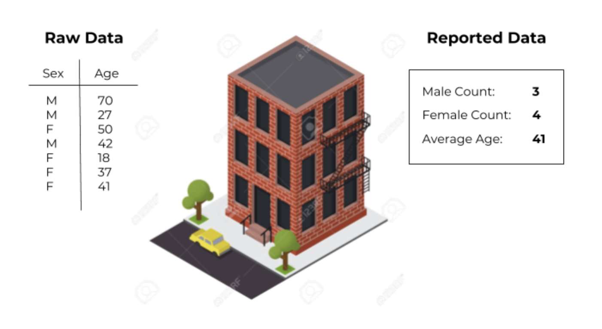
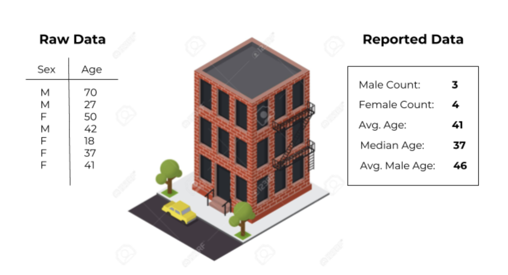

Title 2.
Another risk to privacy comes in the data analysis stage. After we collect the census data form around the country, we perform calculations to turn the raw data into reportable data.
Here is the data for an apartment, which has had noise added to the reported data.

These calculations are called queries. We count totals using count queries, like with sex, and average values like age with averaging queries.
Using the report data above, it is difficult to learn anything about the individual residents. But what happens when we add more variable queries?

With additional queries released in the reported data, we can learn more about the raw data. Note that the average male age tells us that the average age of the males in this apartment is higher than for the females. Someone looking at the reported data could make the following guesses about the raw data:
1. There is one senior-age male living here
2. There are two males over 50 years old living here
But keeping in mind that the reported data has had an unknown amount of noise added to it, the most likely guess is this:
3. We don’t know how many men over 50 years old live here because this apartment data might have a high amount of noise in it
This third guess is another example of the uncertainty that adding noise gives to people guessing raw data from the reported data.
People looking at the reported data will not know
Which values have noise added within a residence
How much noise was added to each residence
This helps conceal the individual data of the 70 year-old man living in the apartment. There is noise added to the reported data, and the value of that noise is unknown. The averages that point towards his age could easily be random noise in this apartment’s data.